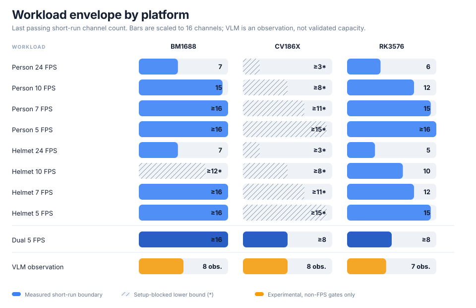
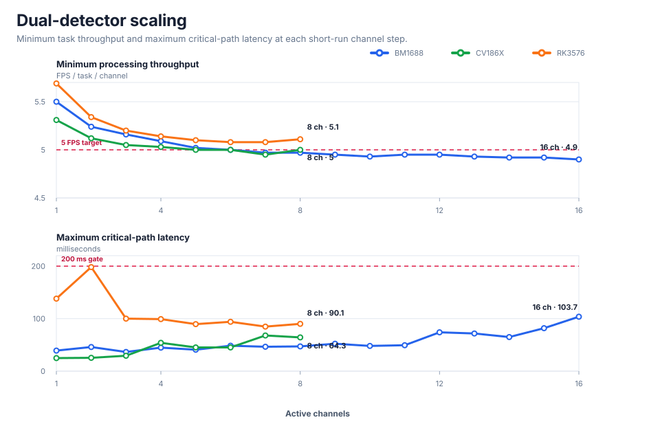
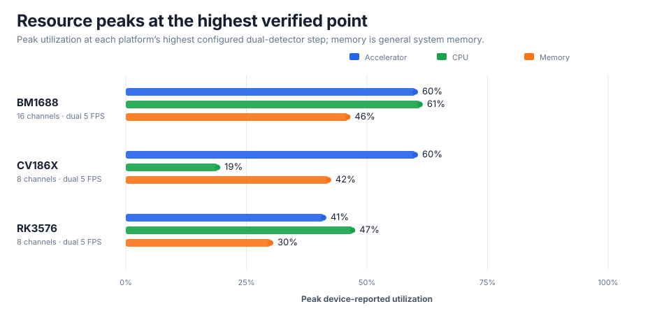

CosmoEdge 1.1 Multi-Platform Video Analytics Benchmark
BM1688 · CV186X · RK3576
With the fixed input and published gates, BM1688 completed 16 channels × 2 detectors × 5 FPS; CV186X and RK3576 completed 8.
Dual-detector observed results
| Platform | Device | Dual-detector observed point | Hold / step |
|---|---|---|---|
| BM1688 | BM1688 reference device | ≥ 16 channels × 2 detectors × 5 FPS | 30s |
| CV186X | CV186X reference device | ≥ 8 channels × 2 detectors × 5 FPS | 30s |
| RK3576 | RK3576 EVB | ≥ 8 channels × 2 detectors × 5 FPS | 30s |



Single-detector capacity matrix
“≥” means the highest configured point passed; “*” marks a next-channel binding block before measurement; “†” marks storage blocking expansion before measurement.
| Platform | Workload | 24 FPS | 10 FPS | 7 FPS | 5 FPS |
|---|---|---|---|---|---|
| BM1688 | Person detector | ≥8 | ≥16 | ≥16 | ≥16 |
| BM1688 | Safety-helmet detector | ≥7* | ≥14* | ≥16 | ≥16 |
| CV186X | Person detector | ≥8* | ≥15* | ≥16 | ≥16 |
| CV186X | Safety-helmet detector | 6 | ≥13* | ≥16 | ≥16 |
| RK3576 | Person detector | 6 | 12 | ≥16 | ≥8† |
| RK3576 | Safety-helmet detector | 6 | 10 | 12 | ≥16 |
Experimental: VLM runtime observation
The three VLM results are existing independent evidence attachments and were not refreshed with the controlled input used by the current small-model cases. FPS is recorded but excluded from PASS/FAIL; RV1126B has no VLM case.
| Platform | Target FPS/ch | Last non-FPS pass | Equivalent FPS/ch | Non-FPS stop |
|---|---|---|---|---|
| BM1688 | 0.1 | 8 | 0.04 | - |
| CV186X | 0.1 | 8 | 0.08 | - |
| RK3576 | 0.1 | 7 | 0.063 | 8 |
Additional experimental platform
RV1126B is listed as an additional attachment and is not included in the three release-platform charts.
| Platform | Workload | 24 FPS | 10 FPS | 7 FPS | 5 FPS | Dual 5 FPS |
|---|---|---|---|---|---|---|
| RV1126B | Person detector | 2 | ≥4 | ≥4 | ≥4 | ≥4 |
| RV1126B | Safety-helmet detector | 2 | ≥4 | ≥4 | ≥4 | ≥4 |
Linked attachments
49 independent executed-case reports
Test environment
| Platform | Board | OS | Runtime / media | CosmoEdge |
|---|---|---|---|---|
| BM1688 | undefined | Ubuntu 22.04.5 LTS | inference: libsophon/BMRT 0.4.12; media: Sophon FFmpeg 2.0.0 / Sophon GStreamer 2.0.0 | V1.1.0.0 |
| CV186X | undefined | Ubuntu 22.04.5 LTS | inference: libsophon/BMRT 0.4.12; media: Sophon FFmpeg 2.0.0 / Sophon GStreamer 2.0.0 | V1.1.0.0 |
| RK3576 | undefined | Linux | inference: RKNN; media: Rockchip MPP / RGA | V1.1.0.0 |
Method and reproduction
- Small-model fixed input: H.264, 1920×1080, 24 FPS; see release-manifest.json for its hash.
- Small-model cases add one channel per step, hold each step for 30 seconds, and use the second half as steady state.
- All 49 executed cases have independent sanitized reports and machine-readable data.
Results apply to the input, models, gates, and hold duration stated here.
release-manifest.json · methodology.md · results/cases.json · SHA256SUMS